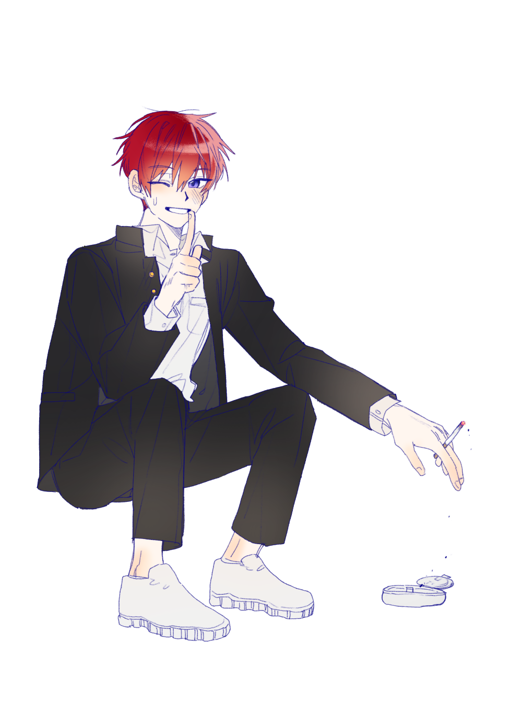

캐치 프레이즈
문제는 문제라고 생각해서 문제
한마디
“ 앗~ 이거 못본척 해주면 안될까? ”
외관
@Jumuck_bab_CM 님 커미션
붉은 머리카락에 벽람색 눈을 하고 있다. 답답한 것을 별로 좋아하지 않아서 단추는 곧잘 풀곤 한다.
걸을 때 정면을 똑바로 쳐다보며 팔다리를 시원시원하게 뻗는 편이다. 하지만 동작이 그럴 뿐이지 같이 나란히 걷다보면 은근히 발걸음이 느리다는 느낌이 있다.
다소 마른 편인데 그게 보기싫지 않도록 입는 방법을 알고 있다. 아주 화려하진 않아도 깔끔한 느낌을 낼 정도는 꾸밈에 신경쓴다.
이름
문해성
나이
18
키/체중
175cm / 65kg
성격
Keyword: 삼시세끼, 체험! 삶의 현장, 시청자
-삼시세끼-
초등학생 때, 소풍을 가기 전날 심하게 감기가 걸려 기대하던 자동차 박물관에 가지 못했다. 원래 몸이 약하기도 했지만, 이후로도 매번 행사나 시험이 있을 때 귀신같이 아팠다. 중학생 때는 근처에 있던 고등학교 운동장에서 날아온 야구공에 등을 맞고 넘어지면서 전봇대에 머리를 부딪힌 적도 있다. 이 외에도 여러 에피소드가 있지만, 요약하자면 해성은 운이 제법 나쁜 편이다. 하지만 단지 해성의 나쁜 운을 설명하고자 하는 건 아니다.
그는 그런 운 나쁜 상황에서도 힐링예능 속 연예인이라도 되는 건지 만사태평, 여유만만하다. 아~ 어떡하지, 아깝다~ 하고는 그냥 웃어 넘기는 것이다. 문제는 문제라고 생각해서 문제다, 라는 말은 그의 입버릇이다.
본인이 아프거나, 상황이 제법 심각해 보일 때도 그런 태도이니 처음에는 그가 상황파악을 제대로 못 했거나, 주변사람을 안심시켜주려는 것인줄 알았던 사람들도 어느순간부터는 그가 원래 나쁜 일에 그리 마음을 두지 않는 성격이라는 걸 깨닫고는 그를 걱정하기를 멈추었다.
걱정을 멈췄다니 이건 또 너무 매정하지 않은가 싶지만, 그렇게 웃어넘기기만 하는 게 아니라 할 수 있다면 손해를 확실히 메꾸는 사람이라 그렇다. 아파서 못 갔던 자동차 박물관은, 그 먼 곳까지 가서 자동차 박물관을 구경하면 자신과 가족이 얻을 즐거움과 학교를 빠져서 잃을 경험을 (초등학생 수준으로) 분석해서 부모님께 브리핑을 하는 것으로 기어코 구경을 갔다.
시험 때 자주 아픈 걸 경험하고 나서는 그냥 평소에, 대체로 당일 복습을 하는 것으로 최대한 컨디션에 영향을 덜 받도록 했다. 운 나쁘게 날아오는 야구공 같은 건… 도무지 피할 자신이 없어 그냥 적당히 포기했다. 게다가 몇 번 다쳐보니 다칠 때 요령도 생겼다. 목숨이 위험할 정도로 큰 사고가 난 적은 없으니 다행지 않나? 그래도 휴대폰과 가방에 혈액형과 보호자 연락처를 적어두긴 했다. 어라, 다시보니 힐링 예능이 아닐지도…
-체험! 삶의 현장-
어릴 때 아파서 누워있는 날이 많았어서 그런지 이것저것 다양하게 해보는 것을 좋아한다. 지나가다 재밌어 보인다! 싶으면 기웃거리면서 해보고, 정기적으로 원데이클래스라던가 하는 것으로 체험활동을 한다. 봉사시간도 뻔한 것으로 채우지 않고 학생들이 잘 안 하는 것, 좀 더 힘든 것들 위주로 돌았다. 심지어는 반 친구들 중에 부모님이 자영업을 하는 애들은 거의 다 해성을 한 번씩은 알바로 써봤을 정도이다. 일머리가 좋아서 다행이지, 아니었으면 끈질긴 민폐진상이었을거다.
-시청자-
재미를 추구하기 위해 도덕을 내려놓으면 어떨까? 모르긴 몰라도 내려놓은 사람은 아주 재미있을 것이다. 그리고 그러면 안된다고 하는 사람도, 도덕까지는 아니어도 예의 정도는 쉽게 내려놓을 사람이 많을 것이다. 해성은 반대로, 예의는 챙기면서 도덕은 살포시 내려두었다.
서문이 길었는데, 그러니까 해성의 친구들의 반수 정도가 불량아들이라는 것에 대한 이야기다. 해성은 단순히 반항적으로 노는 게 유쾌하고 재밌다는 이유로 불량아들과 어울려 놀고, 그들이 하는 나쁜짓에 눈감으며 때때로 동참한다.
누군가는 심각하게 받아들일 일이지만 해성에게는 그렇게 큰 의미가 있는 행위는 아니다. 본인의 기준으로 남에게 그리 큰 피해가 가지 않는 것만 하는 것이기도 하고, 단순히 재밌는 친구들이 있어서 그들과 노는 건데 하필이면 그들이 불량아라는 논리이다. 애초에 학교 안에서 말고는 그렇게 자주 어울리지도 않는다. 그런 친구들과 불량하게 노는 건 말 그대로 간간히 하는 일탈 정도인 것이다.
해성 나름대로 할 말은 더 있다. 본인 앞에서 심각한 수준의 일, 예컨대 괴롭힘이나 폭력은 절대 하지 않고 오히려 말린다. 해성이 은근히 무리의 중심이고 물주이기도 해서 가능한 일이다. 자신은 그 안에 포함되지 않는, 시청자라는 듯한 태도지만 사실은 그렇지 않다는 것은 다들 알고 있을 것이다.
기타
1. 생일 : 2월 18일
2. 가족 : 부모님, 8살짜리 여동생이 있다. 여동생이 막 태어났을 때는 부모님의 신경이 다 그쪽에 쏠려 약간 질투를 했었다. 그래서 어릴적 감기에 걸렸을 때, 일부러 감기 옮을고 갓난쟁이인 동생에게 접근했다가 크게 혼나기도 했었지만 동생이 워낙 자신을 잘 따라서 이제는 동생을 엄청 사랑하고 있다. 해성은 본인이 아플 때 (감기같은 전염성이라도) 은근히 누군가는 옆에 있어줬으면 하는 타입인데, 어릴 때 일을 반성이라도 하듯이 여동생만큼은 엄격하게 가까이 오지 못하게 한다. 하다못해 방문 근처에 오는 것도 꺼려해서, 아플 때 대화를 하려면 같은 집안에서 전화로만 얘기할 수 있을 정도. 반대로 동생이 아플 땐 자기는 한 번 더 걸려도 똑같다며 밀착간호에 돌입한다.
집안이 꽤 부유한 편이다. 어머니는 약사, 아버지는 대기업 임직원으로 두 분 다 벌이가 좋긴 하지만 기본적으로 물려받은 자산의 비중이 크다. 나쁜 쪽으로 질투를 표출하는 애들을 대하는 건 귀찮고 짜증나는 일이지만 돈의 편리함과 부러움의 시선 때문에 돈이 많다는 것을 굳이 감추지 않는다.
3. 건강 : 몸이 자라고 여러 활동들을 해보면서 체력이 늘긴 했지만, 자잘한 병에 잘 걸리는 건 그다지 나아지지 않았다. 여전히 감기에도 잘 걸리고, 독감도 1년에 한 번씩은 꼭 걸리는 것 같다. 그래도 짧고 굵게 아프고 나면 깔끔히 털고 일어나는 편이다.
4. 성적 : 최상위권 성적을 받고 있다. 과목을 가리지 않고 높은 점수를 내며, 운동신경이 좋지 않아 체육은 비교적 점수가 낮지만 실기에서 못 딴 점수를 이론으로 어떻게든 매꾼다. 기본적으로 머리가 좋은 것도 있지만, 요령이 있고 성적에 압박을 느끼지 않으며 무엇보다 노력을 기울이는 덕분이다.
좋아해서 노력한다기 보단, 공부-성적이 아닌 말 그대로 공부-를 포기하고 싶을 만큼 하고싶은 게 생긴다면 또 모르지만, 어차피 학교에 다녀야하는 학생인데 뭐라도 배워두면 두고두고 좋지 않냐는 생각이다.
5. 장래희망 : 돈 많은 한량 백수.
6. 호/불호 : 우주, 사람 많은 곳, 매콤한 음식 / 어색하고 무거운 공기, 물컹한 식감
7. 지하철 탑승 이전 : 하교 후 친구네 식당 일을 도와주고는 집으로 돌아가는 길이었다. 이미 저녁밥은 잔뜩 얻어먹었었기 때문에 받아온 다른 음식은 노숙자분께 드렸다.
8. 지하철 탑승 이후 : ‘음식 맛있었는데 주지 말걸 그랬나~’ 따위의 생각을 하며 게임 방송을 보고 있었다.
소지품
담배 한 갑이 든 가벼운 책가방, 휴대폰
관계
-